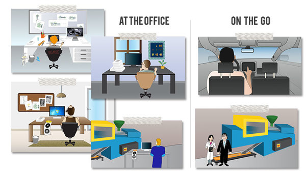
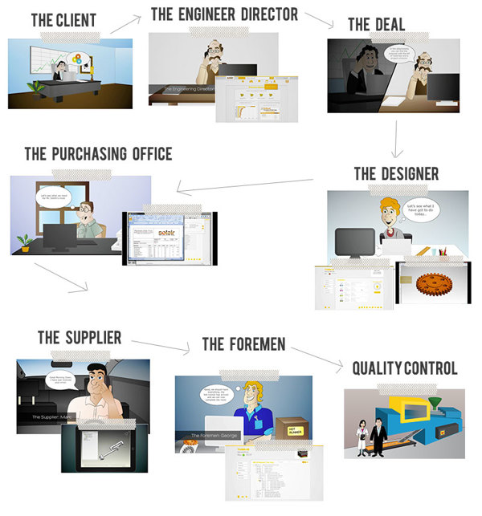

TOPICS: Personas, Interaction Design, Prototyping,Visual Design
Build an intuitive and easy to use PLM for desktop and tablet. Generally this type of software are very hard to use, they require long learning curve and they are not user friendly.
User experiece desigenr creating wireframes and mockups from low to high fidelity, developing personas and creating user flows to evaluate wireframes and mockups.
This project took place between July 2010 and December 2012.
After interviewing real users we ended up with 6 key personas. From this stage of the program we have recruited several companies to be our product pioneers to gain valuable insight on their need we started a blog.
Every persona included name, job title, lenght of time job, daily tasks, features/integrations needed, likes and dislikes
Defining Scenarios for our 6 key personas was extremly useful. We ended up discovering that 4 of them were using the product on a desktop in their office while one of them was using it on a car and one in a workshop.
After defining Personas and Scenarios we focused on the main stream of work. The following video shows how 6 personas interact between themselves and the product in order to get the job done. The interface was one of the first visual we tried and at this stage was mostly a prototype.
The video really helped us collecting all the information we had in one place and it also helped all the user experience team to be on the same page and to explain to everyone in the company from the finance to our own family what the product was for.
Foruser flow skip at sec. 00:50
We integrated some user in the building process since the very start. This user rapresented for us different type of company that could be interested in the product. We called them Pioneers and we organized a few event to show them the product progress and to allow them to meet our UX team and developers. We created a blog where the UX team, developers and users could interact. We posted frequently new features and visual design options. Pioneers helped us to prioritize features and to define product specification.
From user testing and competitors analysis we were able to understand that one of the key differentiator for our company may be a user centered designed approach. People using other software of the same category complained about how less intuitive and hard to learn and use they were.
According with the marketing team we used Happy Users as key role in Solair brand Identity and we developed several advertising campaign to underline Solair's commitment.